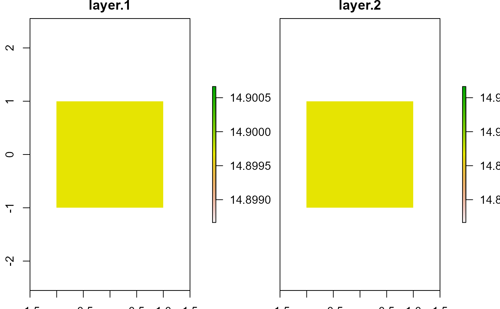

Implementation of the Riley et al (1999) Terrain Ruggedness Index
The algebraic approximation is considerably faster. However, because inclusion of the center cell, the larger the scale the larger the divergence of the minimum value.
Recommended ranges for classifying Topographic Ruggedness Index:
0-80 - level terrain surface.
81-116 - nearly level surface.
117-161 - slightly rugged surface.
162-239 - intermediately rugged surface.
240-497 - moderately rugged surface.
498-958 - highly rugged surface.
gt 959 - extremely rugged surface.
tri(r, s = 3, exact = TRUE, file.name = NULL, ...)
| r | RasterLayer class object |
|---|---|
| s | Scale of window. Must be odd number, can represent 2 dimensions (eg., s=c(3,5) would represent a 3 x 5 window) |
| exact | Calculate (TRUE/FALSE) the exact TRI or an algebraic approximation. |
| file.name | Name of output raster (optional) |
| ... | Additional arguments passed to writeRaster |
raster class object or raster written to disk
Riley, S.J., S.D. DeGloria and R. Elliot (1999) A terrain ruggedness index that quantifies topographic heterogeneity, Intermountain Journal of Sciences 5(1-4):23-27.
Jeffrey S. Evans jeffrey_evans@tnc.org
#> class : RasterLayer #> dimensions : 6, 6, 36 (nrow, ncol, ncell) #> resolution : 0.5, 0.5 (x, y) #> extent : -1.5, 1.5, -1.5, 1.5 (xmin, xmax, ymin, ymax) #> crs : +proj=longlat +datum=WGS84 +ellps=WGS84 +towgs84=0,0,0 #> source : memory #> names : layer #> values : 14.89966, 14.89966 (min, max) #>( tri.app <- tri(elev, exact = FALSE) )#> class : RasterLayer #> dimensions : 6, 6, 36 (nrow, ncol, ncell) #> resolution : 0.5, 0.5 (x, y) #> extent : -1.5, 1.5, -1.5, 1.5 (xmin, xmax, ymin, ymax) #> crs : +proj=longlat +datum=WGS84 +ellps=WGS84 +towgs84=0,0,0 #> source : memory #> names : layer #> values : 14.89966, 14.89966 (min, max) #># }